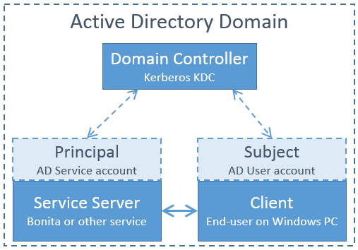
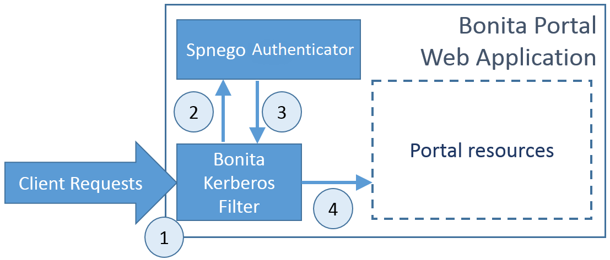

Single sign-on with Kerberos
NOTE: Note: For Enterprise, Performance, Efficiency, and Teamwork editions only.
This pages explains how to configure your Bonita Platform system to use the Kerberos protocol to provide single sign-on (SSO). It assumes you already have a Correctly configured Windows Domain (AD/KDC/DNS services).
This information applies to a Bonita platform deployed from a bundle (Tomcat or WildFly), not to the Engine launched from Bonita Studio. <BUNDLE_HOME> refers to the root directory of the bundle.
Kerberos configuration is at tenant level. Each tenant can use a different authentication method (over Kerberos or not).
NOTE: Note: Bonita uses Spnego library that allows to request tickets using the Kerberos protocol.
Kerberos single sign-on with Active Directory
Kerberos SSO with AD relies on a minimum on 3 physical machines that are member of the same AD domain:

-
Domain Controller: the AD domain controller providing the SSO tickets through the Kerberos KDC component.
-
Service Server: the server on which resides the service we want to access (Bonita for instance). This server is referred to as the "Principal". It uses the credentials of an AD service account and is member of the domain.
-
Client: the client is the end user’s machine. The client is referred to as the "Subject". It uses the credentials of an AD user account and is member of the domain.
Kerberos overview for Bonita
The target architecture for integrating Kerberos SSO with Bonita and Spnego will involve a custom web application filter: Bonita Kerberos filter.

The scenario covered by the filter is the following:
-
The Bonita Kerberos filter intercepts all the requests to bonita portal pages, and checks if the user is already logged in on Bonita
-
If already logged in => Allow the access
-
If not logged in => The request is transferred to the Spnego authenticator
-
The Spnego authenticator will then verify the user’s Kerberos tickets if present or create a new one. After obtaining a valid ticket the filter will store some information (the authenticated user login) in the client request and get back to the Bonita Kerberos filter.
-
The Bonita Kerberos filter will automatically create a Bonita session and let the user through to access the Portal resources.
| + Bonita "username" should match the authenticated user login returned in the client response. |
Pre-installation Environment Checks
In this section, we will describe the minimal set of configuration checks that must be performed before starting the installation on windows.
Domain Membership Checks
Make sure that the Service Server AND the Client machines are member of the same AD Domain.
Service Principal Setup
The Windows service that will be connected with SSO needs to be associated with a Principal in the form of an AD service account. This account is called the Service Principal Name (SPN). Note that this a different account than the machine object on which the service is running.
1- Obtain from your AD administrator the AD service account that is going to be used as the SPN. If none exist yet, follow the steps below else, ignore this.
2- Check that the service account is not already associated to any host by running this command (replace bonita.tomcat with your service account name):
setspn -L bonita.tomcat
This will list the hosts associated to this service account. There should not be any entry.
3- Run these two commands in order to declare the SPN (bonita.tomcat). The first command will use the simple host name (win2008tomcat):
setspn -A HTTP/win2008tomcat bonita.tomcat Registering ServicePrincipalNames for CN=Bonita Tomcat,OU=Service Accounts,OU=Grenoble,OU=Bonitasoft,DC=corp,DC=bonitasoft,DC=com HTTP/win2008tomcat Updated object
Second command with the fully qualified host name (win2008tomcat.corp.bonitasoft.com):
setspn -A HTTP/win2008tomcat.corp.bonitasoft.com bonita.tomcat
Registering ServicePrincipalNames for CN=Bonita Tomcat,OU=Service Accounts,OU=Grenoble,OU=Bonitasoft,DC=corp,DC=bonitasoft,DC=com
HTTP/win2008tomcat.corp.bonitasoft.com
Updated object
4- Make sure the SPN is set up correctly by running this command:
setspn -L bonita.tomcat
Registered ServicePrincipalNames for CN=Bonita Tomcat,OU=Service Accounts,OU=Grenoble,OU=Bonitasoft,DC=corp,DC=bonitasoft,DC=com:
HTTP/win2008tomcat.corp.bonitasoft.com
HTTP/win2008tomcat
5- In Active directory, open the service account user properties and go to the account tab. Flag the following values:
- Password never expires = true - User cannot change password = true - This account supports Kerberos AES128 - This account supports Kerberos AES256 - Use Kerberos DES encryption types for this account = should preferably be false
6- Still in the service account user properties, go to the delegation tab and set the following value to true:
Trust this user for delegation to any service (Kerberos only).
Configure Bonita Bundle for Kerberos
You need to execute the following actions in the folder of each tenant for which you want to support authentication over Kerberos.
If you want this configuration to also apply to each tenant created later, make sure to also perform those actions in the template tenant configuration folder:
<BUNDLE_HOME>/setup/platform_conf/current/tenant_template_* (if you have not started the Bonita bundle yet, the files are located in <BUNDLE_HOME>/setup/platform_conf/initial/tenant_template_*)
The bundle already contains the files needed to use Kerberos with Bonita platform.
To configure Bonita for Kerberos:
-
If you do not already have one:
-
Download a Subscription edition bundle from the customer portal
-
Configure it as needed
-
Run it a first time, so that the first default tenant is created (TENANT_ID = 1)
-
Stop it before modifying the configuration files below
-
-
You will need to edit the Kerberos configuration file in order to select the desired encryption types used to secure the communication. In the following folder
<BUNDLE_HOME>/server/conf(Tomcat) or<BUNDLE_HOME>/server/bin(Wildfly), edit the krb5.conf file as follows:
[libdefaults]
--> default_realm = BONITA.LOCAL
default_tkt_enctypes = aes256-cts-hmac-sha1-96 aes128-cts rc4-hmac des3-cbc-sha1 des-cbc-md5 des-cbc-crc
default_tgs_enctypes = aes256-cts-hmac-sha1-96 aes128-cts rc4-hmac des3-cbc-sha1 des-cbc-md5 des-cbc-crc
permitted_enctypes = aes256-cts-hmac-sha1-96 aes128-cts rc4-hmac des3-cbc-sha1 des-cbc-md5 des-cbc-crc
[realms]
--> BONITA.LOCAL = {
--> kdc = DC.bonita.local
--> default_domain = BONITA.LOCAL
}
[domain_realm]
--> .BONITA.LOCAL = BONITA.LOCAL
if you want to use the AES256-CTS encryption type, you need to update the Java security libraries (Java Cryptography Extension (JCE) Unlimited Strength) to those for Strong Encryption. Depending on your java version, you might have to download some extra files or not.
* For Java updates > Java 8 u162 and java 9, the unlimited policy is enabled by default. You no longer need to install the policy file in the JRE or set the security property crypto.policy * For Java updates < Java 8 u162, you have to download the security libraries [Here](http://www.oracle.com/technetwork/java/javase/downloads/jce8-download-2133166.html) These libraries need to be put in jre/lib/security and jdk/jre/lib/security.
-
(Tomcat) In the following folder
<BUNDLE_HOME>/server/conf, edit the login.conf file as follows:
spnego-client {
com.sun.security.auth.module.Krb5LoginModule required;
};
spnego-server {
com.sun.security.auth.module.Krb5LoginModule required
storeKey=true
isInitiator=false;
};
In addition, the system property java.security.auth.login.config should not already be set or, if it is, it should target the file conf/login.conf. In order to do that, you can edit the file <BUNDLE_HOME>/server/bin/setenv.sh (.bat) and set the SECURITY_OPT variable as follows:
SECURITY_OPTS="-Djava.security.auth.login.config=${CATALINA_HOME}/conf/login.conf"
-
(Wildfly) In the following folder
<BUNDLE_HOME>/setup/wildfly-templates, edit the standalone.xml file as follows:
In:
<subsystem xmlns="urn:jboss:domain:security:1.2">
<security-domains>
Make sure the following security domains are present:
<security-domain name="spnego-server"> <authentication> <login-module code="com.sun.security.auth.module.Krb5LoginModule" flag="required"> <module-option name="storeKey" value="true"/> <module-option name="isInitiator" value="false"/> </login-module> </authentication> </security-domain> <security-domain name="spnego-client"> <authentication> <login-module code="com.sun.security.auth.module.Krb5LoginModule" flag="required"/> </authentication> </security-domain>
-
In the tenant_portal folder of each existing tenant:
<BUNDLE_HOME>/setup/platform_conf/current/tenants/<TENANT_ID>/tenant_portal, edit the authenticationManager-config.properties as follows:
# saml.logout.global = false # auth.tenant.admin.username = install # auth.passphrase = BonitaBPM --> auth.AuthenticationManager = org.bonitasoft.console.common.server.auth.impl.kerberos.RemoteAuthenticationManagerImpl --> kerberos.filter.active = true --> kerberos.auth.standard.allowed = false --> auth.tenant.admin.username = install --> auth.tenant.standard.whitelist = william.jobs --> auth.passphrase = Bonita # auth.AuthenticationManager = org.bonitasoft.console.common.server.auth.impl.oauth.OAuthAuthenticationManagerImpl # OAuth.serviceProvider = LinkedIn # OAuth.consumerKey = ove2vcdjptar --> logout.link.hidden=true
Make sure to set the right tenant admin username.
It is recommended to also replace the value of the passphrase (property auth.passphrase) which is used by the engine to verify the authentication request.
The value must be the same as in the file bonita-tenant-sp-custom.properties.
If the users need to bypass kerberos authentication method, you can authorize it by setting the property kerberos.auth.standard.allowed to true. Users will then be able to log in using the portal login page (/login.jsp) provided they have a bonita account and their password is different from their username.
If only a limited group of users need to bypass kerberos authentication method you can restrain it by setting the property kerberos.auth.standard.allowed to false and setting the property auth.tenant.standard.whitelist with the list of authorized usernames (coma separated).
-
In the tenant_portal folder of each existing tenant:
<BUNDLE_HOME>/setup/platform_conf/current/tenants/<TENANT_ID>/tenant_portal, edit the spnego-config.properties file as follows:--> spnego.allow.basic = true --> spnego.allow.localhost = true --> spnego.allow.unsecure.basic = true --> spnego.login.client.module = spnego-client --> spnego.krb5.conf = conf/krb5.conf --> spnego.login.conf = conf/login.conf --> spnego.login.server.module = spnego-server --> spnego.prompt.ntlm = true --> spnego.logger.level = 1 --> spnego.preauth.username = <username> --> spnego.preauth.password = <password> ----+++<username>+++and +++<password>+++shoud be replaced with the domain account and password to use to pre-authenticate to on the Domain controller acting as Kerberos Key Distribution Center. `spnego.login.client.module` and `spnego.login.server.module` property values should match the login contexts set in `login.conf` for Tomcat or the security domain names set in `standalone.xml` for Wildfly (spnego-client and spnego-server by default). Note that for Wildfly, the properties `spnego.krb5.conf` and `spnego.login.conf` are not used as already set in the file satndalone.xml Make sure to set your principal user name and password. 6. In the tenant_engine folder of each existing tenant: `+++<BUNDLE_HOME>+++/setup/platform_conf/current/tenants/+++<TENANT_ID>+++/tenant_engine/`, edit the file **bonita-tenant-sp-custom.xml** to uncomment the bean passphraseOrPasswordAuthenticationService: ``` +++<bean id="passphraseOrPasswordAuthenticationService" class="com.bonitasoft.engine.authentication.impl.PassphraseOrPasswordAuthenticationService" lazy-init="true">++++++<constructor-arg name="logger" ref="tenantTechnicalLoggerService">++++++</constructor-arg>+++ +++<constructor-arg name="identityService" ref="identityService">++++++</constructor-arg>+++ +++<constructor-arg name="configuredPassphrase" value="${authentication.service.ref.passphrase}">++++++</constructor-arg>++++++</bean>+++ ``` 7. In the tenant_engine folder of each existing tenant: `+++<BUNDLE_HOME>+++/setup/platform_conf/current/tenants/+++<TENANT_ID>+++/tenant_engine/` edit the file bonita-tenant-sp-custom.properties as follows: ``` # Authentication service to use. Some are natively provided: # authenticationService # * binded to bonita authentication mode # * impl: org.bonitasoft.engine.authentication.impl.AuthenticationServiceImpl # jaasAuthenticationService # * to use JAAS # * impl: com.bonitasoft.engine.authentication.impl.JAASGenericAuthenticationServiceImpl # * this is the one to configure SSO over CAS (CAS properties to be defined hereafter # noAuthenticationService # * does no authentication on the engine side # * impl: com.bonitasoft.engine.authentication.impl.NoAuthenticationServiceImpl # passphraseOrPasswordAuthenticationService # * Used by SAML2 and Kerberos implementations, login only if a passphrase is valid, or if a username/password is valid. # * Requires PassphraseOrPasswordAuthenticationService bean to be uncommented in bonita-tenant-sp-custom.xml # * impl: com.bonitasoft.engine.authentication.impl.PassphraseOrPasswordAuthenticationService # you can provide your own implementation in bonita-tenant-sp-custom.xml and refer to the bean name of your choice -\-> authentication.service.ref.name=passphraseOrPasswordAuthenticationService # If authentication.service.ref.name equals "PassphraseOrPasswordAuthenticationService", # you need to configure the following passphrase -\-> authentication.service.ref.passphrase=BonitaBPM # CAS authentication delegate : enables the user, providing login/password, # to be logged in automatically against CAS web application # To be used in conjunction with the generic authentication service configured with CAS (jaasAuthenticationService) #authenticator.delegate=casAuthenticatorDelegate #authentication.delegate.cas.server.url.prefix=http://ip_address:port #authentication.delegate.cas.service.url=http://ip_address:port/bonita/loginservice ``` It is recommended to also replace the value of the passphrase (property auth.passphrase). The value must be the same as in the file **authenticationManager-config.properties** updated previously. 8. If your Domain Controller is correctly configured, you are done. Then you can start the bundle and try to access a portal page, an app page or a form URL (or just `http://+++<host>+++:+++<port>+++/bonita[?tenant=+++<tenantId>+++]`) and make sure that you are automatically logged in. Note that if you try to access `http://+++<bundle host="">+++:+++<port>+++/bonita/login.jsp`, then you won't be redirected as this page still needs to be accessible in order for the tenant administrator (or another user if you set the property `kerberos.auth.standard.allowed` to true or define a whitelist with the property `auth.tenant.standard.whitelist`) to be able to log in without an account on AD. ## Logout behavior The most commonly used solution is to hide the logout button from the portal. Users are logged in as long as they don't close their web browser (unless their session times out). To do this, set the `logout.link.hidden` option to `true` in `authenticationManager-config.properties` located in `+++<BUNDLE_HOME>+++/setup/platform_conf/initial/tenant_template_portal` for not initialized platform or `+++<BUNDLE_HOME>+++/setup/platform_conf/current/tenant_template_portal` and `+++<BUNDLE_HOME>+++/setup/platform_conf/current/tenants/[TENANT_ID]/tenant_portal/`. ## Troubleshoot To troubleshoot Kerberos SSO login issues, you need to add a logging handler for the package `net.sourceforge.spnego` and increase the [log level](logging.md) to `ALL` for the packages `org.bonitasoft`, `com.bonitasoft`, and `net.sourceforge.spnego` in order for errors to be displayed in the log files bonita-*.log (by default, they are not). In order to do that in a Tomcat bundle, you need to edit the file `+++<BUNDLE_HOME>+++/server/conf/logging.properties. * Add the lines: ``` net.sourceforge.spnego.handlers = 5bonita.org.apache.juli.AsyncFileHandler net.sourceforge.spnego.level = ALL ``` * Update the existing lines (to set the level to `ALL`): ``` org.bonitasoft.console.common.server.auth.level = ALL org.bonitasoft.engine.authentication.level = ALL com.bonitasoft.engine.authentication.level = ALL ``` In a WildFly bundle, you need to edit the file `+++<BUNDLE_HOME>+++/setup/wildfly-templates/standalone.xml` in the domain `urn:jboss:domain:logging:3.0` of the *subsystem* tag. Edit the *logger* tags which *category* matches `org.bonitasoft.console.common.server.auth`, `org.bonitasoft.engine.authentication` and `com.bonitasoft.engine.authentication` packages: change the *level* *name* attribute of each *logger* to `ALL` and add a new logger with the *category* `net.sourceforge.spnego` (also with a *level* *name* set to `ALL`). NOTE: **Common issues :** In the logs, you may get a IllegalArgumentException in the class `net.sourceforge.spnego.SpnegoFilterConfig`. The most probable cause for that is that the login contexts (set in `login.conf`) for Tomcat or the security domain names (set in `standalone.xml`) for Wildfly (spnego-client and spnego-server by default) do not match the values of the properties `spnego.login.client.module` and `spnego.login.server.module` set in the file `spnego-config.properties`. You may also see a NullPointerException in the class `net.sourceforge.spnego.SpnegoFilterConfig` In that case, for Tomcat, you should make sure the properties `spnego.krb5.conf` and `spnego.login.conf` of `spnego-config.properties` target the right files (the path is relative to `+++<BUNDLE_HOME>+++/server`) and the system property `java.security.auth.login.config` should not be set or, if it is, it should target the file `conf/login.conf`. ## Manage passwords When your Bonita platform is configured to manage authentication over Kerberos, the users passwords are managed in your AD. However, when you create a user in Bonita Portal, specifying a password is mandatory. This password is ignored when logging in with Kerberos. ## LDAP synchronizer and Kerberos If you are using an LDAP (or AD) service and the [LDAP synchronizer](ldap-synchronizer.md) to manage your user data, you can continue to do this and manage authentication over Kerberos. The LDAP synchronizer user must be registered in Bonita (no need for an LDAP/AD account). It is recommended though to use the tenant admin account. We recommend that you use LDAP or AD as your master source for information, synchronizing the relevant information with your Bonita platform. NOTE: **Note :** By default the [LDAP synchronizer](ldap-synchronizer.md) sets the password of the accounts created with the same value as the username. So, even if you allow standard authentication (by setting the property `kerberos.auth.standard.allowed` in **authenticationManager-config.properties**), users won't be able to log in with the portal login page directly without going through the Domain Controller. ## Single sign-on with Kerberos using the REST API Only resources that require a direct access from a web browser are handled by the Kerberos filter. Access to other resources won't trigger a Kerberos authentication process. Here is the subset of resources filtered by the Kerberos filter by default: * /portal/homepage * /portal/resource/* * /portal/form/* * /mobile/* * /apps/* REST API are not part of them by default, but if an http session already exists thanks to cookies, REST API can be used. The recommended way to authenticate to Bonita Portal to use the REST API is to use the [login service](rest-api-overview.md#bonita-authentication). If you need the SSO to work with the APIs you can update the web.xml of bonita.war to add the following resources to the URL Mappings of AuthenticationFilter and KerberosFilter: +++<url-pattern>+++/API/*+++</url-pattern>++++++</BUNDLE_HOME>++++++</BUNDLE_HOME>++++++</BUNDLE_HOME>++++++</BUNDLE_HOME>++++++</BUNDLE_HOME>++++++</BUNDLE_HOME>++++++</port>++++++</bundle>++++++</tenantId>++++++</port>++++++</host>++++++</TENANT_ID>++++++</BUNDLE_HOME>++++++</TENANT_ID>++++++</BUNDLE_HOME>++++++</password>++++++</username>+++